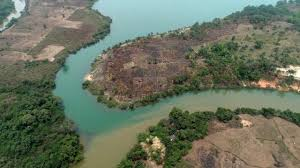
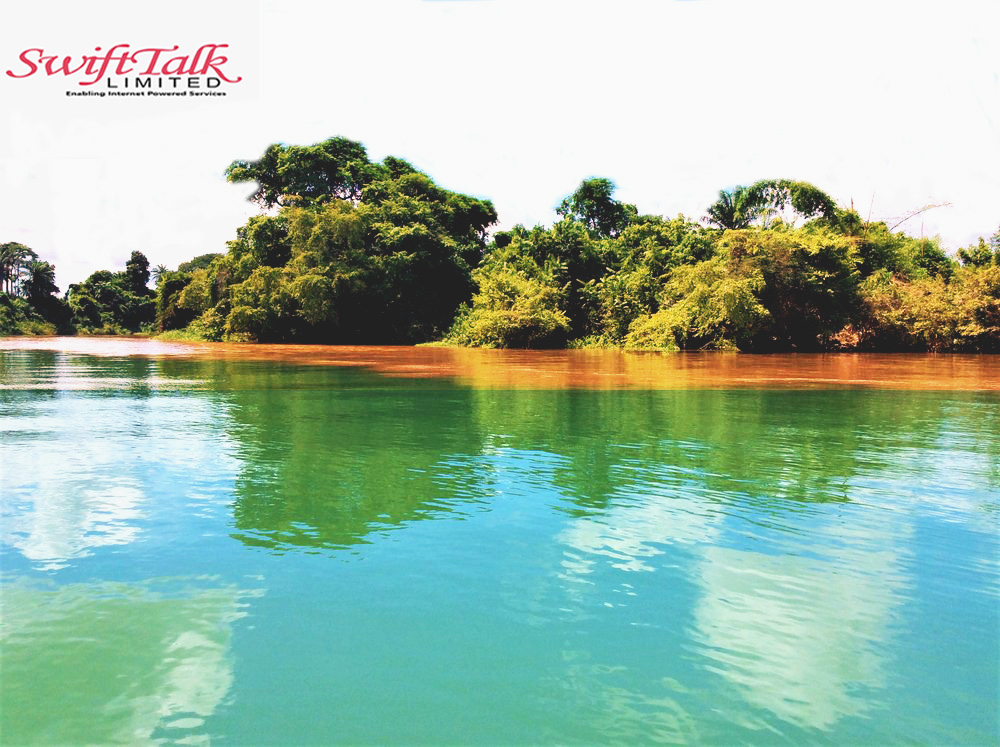
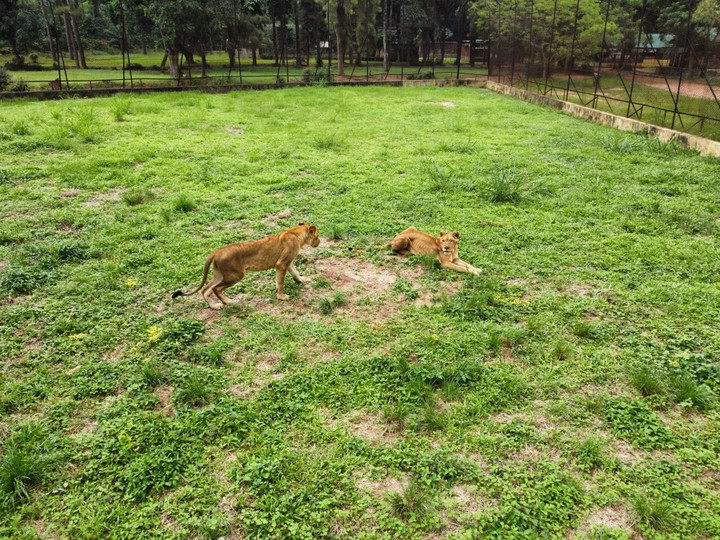
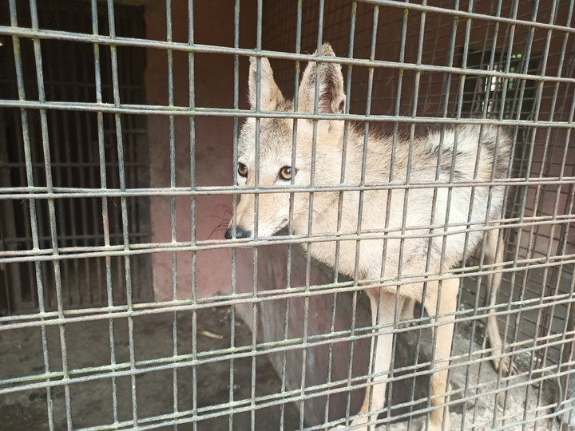

Introduction
Imo State, located in southeastern Nigeria, is a state renowned for its vibrant culture, educational institutions, and historical significance. With Owerri as its capital, the state offers visitors a glimpse into Nigeria's cultural diversity, as well as its natural beauty, which includes lakes, forests, and hills. Known as the heartland of the Igbo people, Imo State is rich in traditions and festivals that attract visitors year-round.
Geography and Climate
Imo State is bordered by Abia State to the east, Anambra State to the west, and Rivers State to the south. The terrain is predominantly lowland, with tropical rainforests covering much of the area. The state's climate is typically tropical, with a rainy season from April to October and a dry season from November to March. Temperatures in Imo generally range from 25°C to 30°C, making it a warm destination year-round.
Culture and People
Imo State is home to the Igbo people, one of Nigeria's largest ethnic groups. The Igbo are known for their rich traditions, including colorful festivals, traditional attire, and lively music and dance. The New Yam Festival (Iri Ji) is one of the most important cultural celebrations in Imo, marking the start of the harvest season and featuring vibrant displays of cultural heritage. The state also boasts several historical sites that offer insight into the past of the Igbo people and their role in Nigeria's history.
Economic Activities
The economy of Imo State is largely based on agriculture, with palm oil, cassava, and yams being the main crops produced. The state is also rich in natural resources, including crude oil and natural gas, which contribute to its economy. In recent years, Imo has become a hub for education, with numerous universities, polytechnics, and research institutions located in the state, attracting students from across Nigeria and beyond.
Tourist Attractions
Imo State offers a variety of attractions that highlight its natural beauty and cultural heritage. Oguta Lake, the largest natural lake in southeastern Nigeria, is a popular destination for boating, fishing, and picnicking. The Nekede Zoo, located just outside of Owerri, is home to a variety of animal species and provides a family-friendly environment for visitors. Other attractions include the Mbari Cultural and Art Centre, which showcases Igbo art and traditions, and the Imo State Museum, where visitors can learn about the state's history and culture.
Education and Innovation
Imo State is a leader in education in Nigeria, with several prestigious institutions of higher learning, including Imo State University and the Federal University of Technology, Owerri. These institutions are known for their academic excellence and contribute to the state's growing reputation as a center for innovation and research. The state's education sector is also supported by a number of vocational training centers and research institutes, making it a hub for knowledge and skill development.
Oguta Lake
 Oguta Lake, located in the western part of Imo State, is a picturesque natural lake known for its clear blue waters and serene environment. The lake is a popular destination for tourists and locals alike, offering opportunities for boating, fishing, and relaxation. Oguta Lake is also rich in folklore and history, with legends surrounding its formation and the surrounding communities. Visitors to Oguta Lake can enjoy boat rides, explore the scenic surroundings, and learn about the cultural significance of the area.
Nekede Zoo
 Nekede Zoo, located just outside Owerri, is a popular family destination that offers visitors the chance to see a variety of wildlife species in a natural setting. The zoo is home to animals such as lions, monkeys, and birds, making it a great place for children and adults to learn about wildlife conservation. Nekede Zoo also features lush gardens and picnic areas, making it a perfect spot for a day out with family and friends.
Conclusion
Imo State is a destination that offers a blend of cultural richness, natural beauty, and educational opportunities. Whether you're interested in exploring its historical sites, relaxing by the serene Oguta Lake, or learning about the local wildlife at Nekede Zoo, Imo State has something to offer every visitor. With its warm climate, vibrant festivals, and welcoming people, Imo is a must-visit destination in Nigeria's southeastern region.